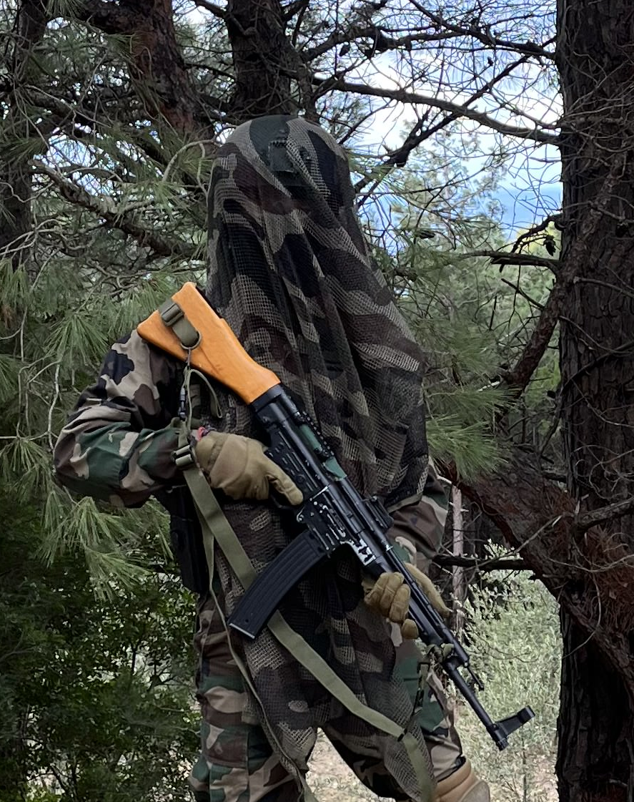

Military Intelligence, Section 6 Report
He is not a soldier. Soldiers fight for flags, and flags eventually fade. In the smoke-filled border zones of Sub-Saharan Africa and the neon-drenched back alleys of Southeast Asia, he is known only by the digital footprint he leaves behind: The Great Salamandros.
He doesn’t have a home, a social security number, or a sense of patriotism. His only North Star is the fluctuating value of the Euro and the steady weight of gold.
Operating across five continents, he is the silent variable in proxy wars and corporate "restructuring" alike. One week, he is extracting a high-value asset from a failed state in South America; the next, he is sabotaging a private satellite facility in the Arctic. He doesn't care who signs the check—a desperate democratic government or a ruthless mining conglomerate—as long as the wire transfer clears before the first bullet is fired. To him, borders are just lines on a map that make extraction more expensive. He possesses the cold, calculated precision of an accountant and the lethal efficiency of a predator. He carries no mementos, no medals, and no mercy. His creed is simple: "Ideology is for those who can't afford the truth. And the truth is, everyone has a price."